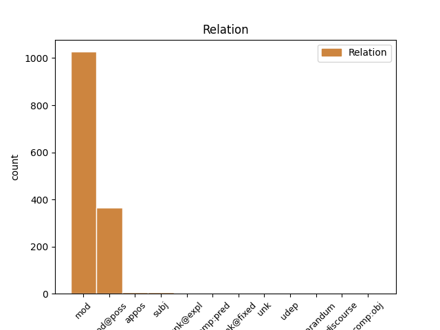
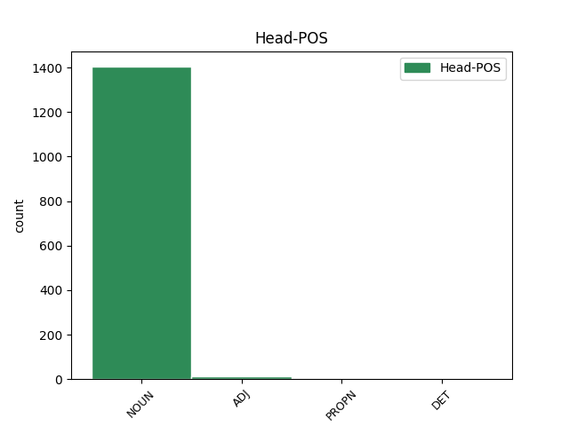
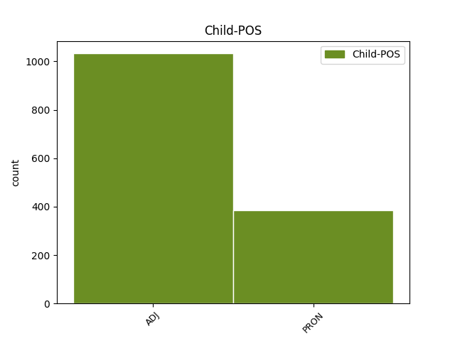

Distribution of features within this leaf



Agreement Rules sorted by frequency.
- When the dependent token is the modifer(mod) of the head token, and the head token is NOUN and the dependent token is ADJ.
1 Han _ _ _ _ 0 _ _ _
2 tänkte _ _ _ _ 0 _ _ _
3 absolut _ _ _ _ 0 _ _ _
4 inte _ _ _ _ 0 _ _ _
5 bedriva _ _ _ _ 0 _ _ _
6 sodomi _ _ _ _ 0 _ _ _
7 med _ _ _ _ 0 _ _ _
8 sin _ _ _ _ 0 _ _ _
9 egen egen ADJ POS-SG-IND Case=Nom|Degree=Pos|Gender=Com|Number=Sing 10 mod _ _
10 hustru hustru NOUN SG-IND-NOM Case=Nom|Definite=Ind|Gender=Com|Number=Sing 0 _ _ _
11 . _ _ _ _ 0 _ _ _
1 Allt _ _ _ _ 0 _ _ _
2 eftersom _ _ _ _ 0 _ _ _
3 hans _ _ _ _ 0 _ _ _
4 värld _ _ _ _ 0 _ _ _
5 mörknade _ _ _ _ 0 _ _ _
6 lade _ _ _ _ 0 _ _ _
7 sig _ _ _ _ 0 _ _ _
8 skuggorna _ _ _ _ 0 _ _ _
9 över _ _ _ _ 0 _ _ _
10 vårt vi PRON P1PL-GEN-SG Case=Gen|Definite=Def|Gender=Neut|Number=Sing|Poss=Yes|PronType=Prs 11 mod@poss _ _
11 hus hus NOUN IND-NOM Case=Nom|Definite=Ind|Gender=Neut|Number=Sing 0 _ _ _
12 . _ _ _ _ 0 _ _ _
1 " _ _ _ _ 0 _ _ _
2 Nej _ _ _ _ 0 _ _ _
3 . _ _ _ _ 0 _ _ _
4 Jag jag PRON PERS-P1SG-NOM Case=Nom|Definite=Def|Gender=Com|Number=Sing|PronType=Prs 5 subj _ _
5 bor bo NOUN PL-IND-NOM Case=Nom|Definite=Ind|Gender=Com|Number=Plur 0 _ _ _
6 i _ _ _ _ 0 _ _ _
7 New _ _ _ _ 0 _ _ _
8 York _ _ _ _ 0 _ _ _
9 . _ _ _ _ 0 _ _ _
1 Det den PRON EX-P3SG Definite=Def|Gender=Neut|Number=Sing|PronType=Prs 4 unk@expl _ _
2 var _ _ _ _ 0 _ _ _
3 hans _ _ _ _ 0 _ _ _
4 liv liv NOUN IND-NOM Case=Nom|Definite=Ind|Gender=Neut|Number=Sing 0 _ _ _
5 som _ _ _ _ 0 _ _ _
6 höll _ _ _ _ 0 _ _ _
7 på _ _ _ _ 0 _ _ _
8 att _ _ _ _ 0 _ _ _
9 gå _ _ _ _ 0 _ _ _
10 i _ _ _ _ 0 _ _ _
11 kvav _ _ _ _ 0 _ _ _
12 . _ _ _ _ 0 _ _ _
1 Hon _ _ _ _ 0 _ _ _
2 lagade _ _ _ _ 0 _ _ _
3 varm varm ADJ POS-SG-IND Case=Nom|Definite=Ind|Degree=Pos|Gender=Com|Number=Sing 4 mod _ _
4 choklad choklad ADJ SG-IND-NOM Case=Nom|Definite=Ind|Gender=Com|Number=Sing 0 _ _ _
5 åt _ _ _ _ 0 _ _ _
6 oss _ _ _ _ 0 _ _ _
7 och _ _ _ _ 0 _ _ _
8 mor _ _ _ _ 0 _ _ _
9 for _ _ _ _ 0 _ _ _
10 iväg _ _ _ _ 0 _ _ _
11 i _ _ _ _ 0 _ _ _
12 en _ _ _ _ 0 _ _ _
13 taxi _ _ _ _ 0 _ _ _
14 . _ _ _ _ 0 _ _ _
1 Det _ _ _ _ 0 _ _ _
2 var _ _ _ _ 0 _ _ _
3 ju _ _ _ _ 0 _ _ _
4 fullständigt _ _ _ _ 0 _ _ _
5 hopplöst hopplös ADJ POS-SG-IND Case=Nom|Definite=Ind|Degree=Pos|Gender=Neut|Number=Sing 0 _ _ _
6 förut _ _ _ _ 0 _ _ _
7 , _ _ _ _ 0 _ _ _
8 hopplöst hopplös ADJ POS-SG-IND Case=Nom|Definite=Ind|Degree=Pos|Gender=Neut|Number=Sing 5 appos _ _
9 både _ _ _ _ 0 _ _ _
10 för _ _ _ _ 0 _ _ _
11 distriktskommissarien _ _ _ _ 0 _ _ _
12 och _ _ _ _ 0 _ _ _
13 för _ _ _ _ 0 _ _ _
14 folket _ _ _ _ 0 _ _ _
15 . _ _ _ _ 0 _ _ _
1 På _ _ _ _ 0 _ _ _
2 bröllopsnatten _ _ _ _ 0 _ _ _
3 på _ _ _ _ 0 _ _ _
4 Hotel _ _ _ _ 0 _ _ _
5 Ra-Ra Ra-Ra NOUN SG-IND-NOM Case=Nom|Definite=Ind|Gender=Neut|Number=Sing 0 _ _ _
6 ( _ _ _ _ 0 _ _ _
7 dekor _ _ _ _ 0 _ _ _
8 : _ _ _ _ 0 _ _ _
9 liverpoolskt _ _ _ _ 0 _ _ _
10 egyptiskt egyptisk ADJ POS-SG-IND Case=Nom|Definite=Ind|Degree=Pos|Gender=Neut|Number=Sing 5 appos _ SpaceAfter=No
11 ) _ _ _ _ 0 _ _ _
12 , _ _ _ _ 0 _ _ _
13 tog _ _ _ _ 0 _ _ _
14 min _ _ _ _ 0 _ _ _
15 far _ _ _ _ 0 _ _ _
16 av _ _ _ _ 0 _ _ _
17 sig _ _ _ _ 0 _ _ _
18 pyjamasen _ _ _ _ 0 _ _ _
19 så _ _ _ _ 0 _ _ _
20 att _ _ _ _ 0 _ _ _
21 hans _ _ _ _ 0 _ _ _
22 hustru _ _ _ _ 0 _ _ _
23 kunde _ _ _ _ 0 _ _ _
24 beskåda _ _ _ _ 0 _ _ _
25 honom _ _ _ _ 0 _ _ _
26 som _ _ _ _ 0 _ _ _
27 den _ _ _ _ 0 _ _ _
28 man _ _ _ _ 0 _ _ _
29 han _ _ _ _ 0 _ _ _
30 var _ _ _ _ 0 _ _ _
31 , _ _ _ _ 0 _ _ _
32 varefter _ _ _ _ 0 _ _ _
33 han _ _ _ _ 0 _ _ _
34 förkunnade _ _ _ _ 0 _ _ _
35 att _ _ _ _ 0 _ _ _
36 han _ _ _ _ 0 _ _ _
37 inte _ _ _ _ 0 _ _ _
38 tänkte _ _ _ _ 0 _ _ _
39 älska _ _ _ _ 0 _ _ _
40 med _ _ _ _ 0 _ _ _
41 henne _ _ _ _ 0 _ _ _
42 förrän _ _ _ _ 0 _ _ _
43 han _ _ _ _ 0 _ _ _
44 hade _ _ _ _ 0 _ _ _
45 blivit _ _ _ _ 0 _ _ _
46 utsedd _ _ _ _ 0 _ _ _
47 till _ _ _ _ 0 _ _ _
48 chef _ _ _ _ 0 _ _ _
49 för _ _ _ _ 0 _ _ _
50 rederiet _ _ _ _ 0 _ _ _
51 . _ _ _ _ 0 _ _ _
1 Det _ _ _ _ 0 _ _ _
2 var _ _ _ _ 0 _ _ _
3 ingenting ingenting PRON NEG-SG Definite=Ind|Gender=Neut|Number=Sing|PronType=Neg 4 mod _ _
4 annat annan ADJ POS-SG-IND Case=Nom|Definite=Ind|Degree=Pos|Gender=Neut|Number=Sing 0 _ _ _
5 än _ _ _ _ 0 _ _ _
6 tjuvnad _ _ _ _ 0 _ _ _
7 i _ _ _ _ 0 _ _ _
8 samband _ _ _ _ 0 _ _ _
9 med _ _ _ _ 0 _ _ _
10 våldsdåd _ _ _ _ 0 _ _ _
11 , _ _ _ _ 0 _ _ _
12 kvalificerat _ _ _ _ 0 _ _ _
13 mord _ _ _ _ 0 _ _ _
14 i _ _ _ _ 0 _ _ _
15 stor _ _ _ _ 0 _ _ _
16 skala _ _ _ _ 0 _ _ _
17 , _ _ _ _ 0 _ _ _
18 och _ _ _ _ 0 _ _ _
19 de _ _ _ _ 0 _ _ _
20 kastade _ _ _ _ 0 _ _ _
21 sig _ _ _ _ 0 _ _ _
22 blint _ _ _ _ 0 _ _ _
23 in _ _ _ _ 0 _ _ _
24 i _ _ _ _ 0 _ _ _
25 det _ _ _ _ 0 _ _ _
26 – _ _ _ _ 0 _ _ _
27 vilket _ _ _ _ 0 _ _ _
28 ju _ _ _ _ 0 _ _ _
29 passar _ _ _ _ 0 _ _ _
30 bra _ _ _ _ 0 _ _ _
31 för _ _ _ _ 0 _ _ _
32 den _ _ _ _ 0 _ _ _
33 som _ _ _ _ 0 _ _ _
34 ger _ _ _ _ 0 _ _ _
35 sig _ _ _ _ 0 _ _ _
36 på _ _ _ _ 0 _ _ _
37 själva _ _ _ _ 0 _ _ _
38 mörkret _ _ _ _ 0 _ _ _
39 . _ _ _ _ 0 _ _ _
1 Vi _ _ _ _ 0 _ _ _
2 hörde _ _ _ _ 0 _ _ _
3 en _ _ _ _ 0 _ _ _
4 lastbil _ _ _ _ 0 _ _ _
5 komma _ _ _ _ 0 _ _ _
6 bakifrån _ _ _ _ 0 _ _ _
7 och _ _ _ _ 0 _ _ _
8 mor _ _ _ _ 0 _ _ _
9 berättade _ _ _ _ 0 _ _ _
10 att _ _ _ _ 0 _ _ _
11 det _ _ _ _ 0 _ _ _
12 var _ _ _ _ 0 _ _ _
13 ett _ _ _ _ 0 _ _ _
14 TV-team TV-team NOUN IND-NOM Case=Nom|Definite=Ind|Gender=Neut|Number=Sing 0 _ _ _
15 som _ _ _ _ 0 _ _ _
16 kom _ _ _ _ 0 _ _ _
17 , _ _ _ _ 0 _ _ _
18 något någon PRON IND-SG Definite=Ind|Gender=Neut|Number=Sing|PronType=Rel 14 appos _ _
19 som _ _ _ _ 0 _ _ _
20 jag _ _ _ _ 0 _ _ _
21 tyckte _ _ _ _ 0 _ _ _
22 var _ _ _ _ 0 _ _ _
23 spännande _ _ _ _ 0 _ _ _
24 eftersom _ _ _ _ 0 _ _ _
25 jag _ _ _ _ 0 _ _ _
26 aldrig _ _ _ _ 0 _ _ _
27 hade _ _ _ _ 0 _ _ _
28 sett _ _ _ _ 0 _ _ _
29 en _ _ _ _ 0 _ _ _
30 TV _ _ _ _ 0 _ _ _
31 . _ _ _ _ 0 _ _ _
1 Universum _ _ _ _ 0 _ _ _
2 blir _ _ _ _ 0 _ _ _
3 sin sin PRON RFL-SG-GEN Case=Gen|Definite=Def|Gender=Com|Number=Sing|Poss=Yes|PronType=Prs 4 mod@poss _ _
4 egen egen ADJ POS-SG-IND Case=Nom|Degree=Pos|Gender=Com|Number=Sing 0 _ _ _
5 tolkning _ _ _ _ 0 _ _ _
6 inför _ _ _ _ 0 _ _ _
7 ögonen _ _ _ _ 0 _ _ _
8 på _ _ _ _ 0 _ _ _
9 en _ _ _ _ 0 _ _ _
10 i _ _ _ _ 0 _ _ _
11 den _ _ _ _ 0 _ _ _
12 öppna _ _ _ _ 0 _ _ _
13 dalens _ _ _ _ 0 _ _ _
14 klippkaos _ _ _ _ 0 _ _ _
15 som _ _ _ _ 0 _ _ _
16 slutar _ _ _ _ 0 _ _ _
17 i _ _ _ _ 0 _ _ _
18 dött _ _ _ _ 0 _ _ _
19 vatten _ _ _ _ 0 _ _ _
20 . _ _ _ _ 0 _ _ _
1 Ni _ _ _ _ 0 _ _ _
2 anar _ _ _ _ 0 _ _ _
3 inte _ _ _ _ 0 _ _ _
4 hur _ _ _ _ 0 _ _ _
5 effektiv _ _ _ _ 0 _ _ _
6 en _ _ _ _ 0 _ _ _
7 sån sådan ADJ POS-SG-IND Case=Nom|Definite=Ind|Degree=Pos|Gender=Com|Number=Sing 10 reparandum _ SpaceAfter=No
8 ... _ _ _ _ 0 _ _ _
9 en _ _ _ _ 0 _ _ _
10 sån sådan ADJ POS-SG-IND Case=Nom|Definite=Ind|Degree=Pos|Gender=Com|Number=Sing 0 _ _ _
11 ... _ _ _ _ 0 _ _ _
12 förmåga _ _ _ _ 0 _ _ _
13 kan _ _ _ _ 0 _ _ _
14 vara _ _ _ _ 0 _ _ _
15 . _ _ _ _ 0 _ _ _
1 Det _ _ _ _ 0 _ _ _
2 borde _ _ _ _ 0 _ _ _
3 , _ _ _ _ 0 _ _ _
4 som _ _ _ _ 0 _ _ _
5 Olivia _ _ _ _ 0 _ _ _
6 brukade _ _ _ _ 0 _ _ _
7 säga _ _ _ _ 0 _ _ _
8 , _ _ _ _ 0 _ _ _
9 ha _ _ _ _ 0 _ _ _
10 varit _ _ _ _ 0 _ _ _
11 ett _ _ _ _ 0 _ _ _
12 dystert _ _ _ _ 0 _ _ _
13 ställe ställe NOUN SG-IND-NOM Case=Nom|Definite=Ind|Gender=Neut|Number=Sing 0 _ _ _
14 men _ _ _ _ 0 _ _ _
15 var _ _ _ _ 0 _ _ _
16 det den PRON PERS-P3SG Definite=Def|Gender=Neut|Number=Sing|PronType=Prs 13 comp:pred _ _
17 inte _ _ _ _ 0 _ _ _
18 . _ _ _ _ 0 _ _ _
19 Tvärt _ _ _ _ 0 _ _ _
20 om _ _ _ _ 0 _ _ _
21 skedde _ _ _ _ 0 _ _ _
22 en _ _ _ _ 0 _ _ _
23 förnyelse _ _ _ _ 0 _ _ _
24 : _ _ _ _ 0 _ _ _
25 landsbygden _ _ _ _ 0 _ _ _
26 hade _ _ _ _ 0 _ _ _
27 kommit _ _ _ _ 0 _ _ _
28 i _ _ _ _ 0 _ _ _
29 ropet _ _ _ _ 0 _ _ _
30 igen _ _ _ _ 0 _ _ _
31 , _ _ _ _ 0 _ _ _
32 skänkt _ _ _ _ 0 _ _ _
33 människorna _ _ _ _ 0 _ _ _
34 den _ _ _ _ 0 _ _ _
35 trygghet _ _ _ _ 0 _ _ _
36 som _ _ _ _ 0 _ _ _
37 kommer _ _ _ _ 0 _ _ _
38 av _ _ _ _ 0 _ _ _
39 orubblig _ _ _ _ 0 _ _ _
40 ro _ _ _ _ 0 _ _ _
41 och _ _ _ _ 0 _ _ _
42 seg _ _ _ _ 0 _ _ _
43 livskraft _ _ _ _ 0 _ _ _
44 , _ _ _ _ 0 _ _ _
45 en _ _ _ _ 0 _ _ _
46 möjlighet _ _ _ _ 0 _ _ _
47 att _ _ _ _ 0 _ _ _
48 börja _ _ _ _ 0 _ _ _
49 från _ _ _ _ 0 _ _ _
50 början _ _ _ _ 0 _ _ _
51 igen _ _ _ _ 0 _ _ _
52 . _ _ _ _ 0 _ _ _
1 det _ _ _ _ 0 _ _ _
2 har _ _ _ _ 0 _ _ _
3 kvar _ _ _ _ 0 _ _ _
4 sin _ _ _ _ 0 _ _ _
5 gamla _ _ _ _ 0 _ _ _
6 prägel _ _ _ _ 0 _ _ _
7 av _ _ _ _ 0 _ _ _
8 gruvjobbarpub _ _ _ _ 0 _ _ _
9 , _ _ _ _ 0 _ _ _
10 men _ _ _ _ 0 _ _ _
11 det _ _ _ _ 0 _ _ _
12 passar _ _ _ _ 0 _ _ _
13 bra _ _ _ _ 0 _ _ _
14 för _ _ _ _ 0 _ _ _
15 dom _ _ _ _ 0 _ _ _
16 nya _ _ _ _ 0 _ _ _
17 statliga _ _ _ _ 0 _ _ _
18 institutionerna _ _ _ _ 0 _ _ _
19 , _ _ _ _ 0 _ _ _
20 jag _ _ _ _ 0 _ _ _
21 menar _ _ _ _ 0 _ _ _
22 inte _ _ _ _ 0 _ _ _
23 allt _ _ _ _ 0 _ _ _
24 för _ _ _ _ 0 _ _ _
25 imponerande _ _ _ _ 0 _ _ _
26 , _ _ _ _ 0 _ _ _
27 så _ _ _ _ 0 _ _ _
28 en en DET SG-IND Definite=Ind|Gender=Com|Number=Sing|PronType=Art 0 _ _ _
29 hel hel ADJ POS-SG-IND Case=Nom|Definite=Ind|Degree=Pos|Gender=Com|Number=Sing 28 unk@fixed _ _
30 del _ _ _ _ 0 _ _ _
31 afrikaner _ _ _ _ 0 _ _ _
32 har _ _ _ _ 0 _ _ _
33 börjat _ _ _ _ 0 _ _ _
34 frekventera _ _ _ _ 0 _ _ _
35 det _ _ _ _ 0 _ _ _
36 . _ _ _ _ 0 _ _ _
1 Harry _ _ _ _ 0 _ _ _
2 var _ _ _ _ 0 _ _ _
3 inte _ _ _ _ 0 _ _ _
4 det _ _ _ _ 0 _ _ _
5 minsta _ _ _ _ 0 _ _ _
6 lik lik ADJ POS-SG-IND Case=Nom|Definite=Ind|Degree=Pos|Gender=Com|Number=Sing 0 _ _ _
7 någon _ _ _ _ 0 _ _ _
8 annan annan ADJ POS-SG-IND Case=Nom|Definite=Ind|Degree=Pos|Gender=Com|Number=Sing 6 comp:pred _ _
9 i _ _ _ _ 0 _ _ _
10 familjen _ _ _ _ 0 _ _ _
11 . _ _ _ _ 0 _ _ _
1 Mrs _ _ _ _ 0 _ _ _
2 Weasley _ _ _ _ 0 _ _ _
3 kom _ _ _ _ 0 _ _ _
4 marscherande _ _ _ _ 0 _ _ _
5 över _ _ _ _ 0 _ _ _
6 gården _ _ _ _ 0 _ _ _
7 med _ _ _ _ 0 _ _ _
8 en _ _ _ _ 0 _ _ _
9 sådan _ _ _ _ 0 _ _ _
10 fart _ _ _ _ 0 _ _ _
11 att _ _ _ _ 0 _ _ _
12 kycklingarna _ _ _ _ 0 _ _ _
13 spreds _ _ _ _ 0 _ _ _
14 åt _ _ _ _ 0 _ _ _
15 alla _ _ _ _ 0 _ _ _
16 håll _ _ _ _ 0 _ _ _
17 , _ _ _ _ 0 _ _ _
18 och _ _ _ _ 0 _ _ _
19 trots _ _ _ _ 0 _ _ _
20 att _ _ _ _ 0 _ _ _
21 hon _ _ _ _ 0 _ _ _
22 var _ _ _ _ 0 _ _ _
23 en _ _ _ _ 0 _ _ _
24 kortväxt kortväxt ADJ POS-SG-IND Case=Nom|Definite=Ind|Degree=Pos|Gender=Com|Number=Sing 27 udep _ SpaceAfter=No
25 , _ _ _ _ 0 _ _ _
26 knubbig _ _ _ _ 0 _ _ _
27 kvinna kvinna NOUN SG-IND-NOM Case=Nom|Definite=Ind|Gender=Com|Number=Sing 0 _ _ _
28 med _ _ _ _ 0 _ _ _
29 vänligt _ _ _ _ 0 _ _ _
30 utseende _ _ _ _ 0 _ _ _
31 var _ _ _ _ 0 _ _ _
32 hon _ _ _ _ 0 _ _ _
33 för _ _ _ _ 0 _ _ _
34 ögonblicket _ _ _ _ 0 _ _ _
35 märkligt _ _ _ _ 0 _ _ _
36 lik _ _ _ _ 0 _ _ _
37 en _ _ _ _ 0 _ _ _
38 sabeltandad _ _ _ _ 0 _ _ _
39 tiger _ _ _ _ 0 _ _ _
40 . _ _ _ _ 0 _ _ _
1 Han _ _ _ _ 0 _ _ _
2 ville _ _ _ _ 0 _ _ _
3 jämföra _ _ _ _ 0 _ _ _
4 oss _ _ _ _ 0 _ _ _
5 , _ _ _ _ 0 _ _ _
6 sida _ _ _ _ 0 _ _ _
7 vid _ _ _ _ 0 _ _ _
8 sida _ _ _ _ 0 _ _ _
9 , _ _ _ _ 0 _ _ _
10 var _ _ _ _ 0 _ _ _
11 jag _ _ _ _ 0 _ _ _
12 lik lik ADJ POS-SG-IND Case=Nom|Definite=Ind|Degree=Pos|Gender=Com|Number=Sing 0 _ _ _
13 honom han PRON PERS-P3SG-ACC Case=Acc|Definite=Def|Gender=Com|Number=Sing|PronType=Prs 12 comp:obj _ SpaceAfter=No
14 ? _ _ _ _ 0 _ _ _
1 Ut _ _ _ _ 0 _ _ _
2 kom _ _ _ _ 0 _ _ _
3 Athena Athena PROPN SG-NOM Case=Nom|Gender=Com|Number=Sing 0 _ _ _
4 , _ _ _ _ 0 _ _ _
5 högrest högrest ADJ POS-SG-IND Case=Nom|Definite=Ind|Degree=Pos|Gender=Com|Number=Sing 3 mod _ SpaceAfter=No
6 , _ _ _ _ 0 _ _ _
7 stark _ _ _ _ 0 _ _ _
8 , _ _ _ _ 0 _ _ _
9 vacker _ _ _ _ 0 _ _ _
10 , _ _ _ _ 0 _ _ _
11 och _ _ _ _ 0 _ _ _
12 sin _ _ _ _ 0 _ _ _
13 faders _ _ _ _ 0 _ _ _
14 barn _ _ _ _ 0 _ _ _
15 . _ _ _ _ 0 _ _ _
1 HON hon PRON PERS-P3SG-NOM Case=Nom|Definite=Def|Gender=Com|Number=Sing|PronType=Prs 3 unk _ SpaceAfter=No
2 : _ _ _ _ 0 _ _ _
3 Kvinnor kvinna NOUN PL-IND-NOM Case=Nom|Definite=Ind|Gender=Com|Number=Plur 0 _ _ _
4 också _ _ _ _ 0 _ _ _
5 ? _ _ _ _ 0 _ _ _
1 Det _ _ _ _ 0 _ _ _
2 hördes _ _ _ _ 0 _ _ _
3 ett _ _ _ _ 0 _ _ _
4 förfärligt _ _ _ _ 0 _ _ _
5 skrammel _ _ _ _ 0 _ _ _
6 och _ _ _ _ 0 _ _ _
7 dunder _ _ _ _ 0 _ _ _
8 utanför _ _ _ _ 0 _ _ _
9 dörren _ _ _ _ 0 _ _ _
10 och _ _ _ _ 0 _ _ _
11 mina _ _ _ _ 0 _ _ _
12 föräldrar _ _ _ _ 0 _ _ _
13 brakade _ _ _ _ 0 _ _ _
14 in _ _ _ _ 0 _ _ _
15 i _ _ _ _ 0 _ _ _
16 hallen _ _ _ _ 0 _ _ _
17 ; _ _ _ _ 0 _ _ _
18 hon hon PRON PERS-P3SG-NOM Case=Nom|Definite=Def|Gender=Com|Number=Sing|PronType=Prs 19 subj _ _
19 iförd iförd ADJ AD-SG-IND Case=Nom|Definite=Ind|Gender=Com|Number=Sing 0 _ _ _
20 silverräv _ _ _ _ 0 _ _ _
21 , _ _ _ _ 0 _ _ _
22 han _ _ _ _ 0 _ _ _
23 i _ _ _ _ 0 _ _ _
24 ny _ _ _ _ 0 _ _ _
25 överrock _ _ _ _ 0 _ _ _
26 och _ _ _ _ 0 _ _ _
27 trilbyhatt _ _ _ _ 0 _ _ _
28 . _ _ _ _ 0 _ _ _
Disagree Examples:
1 När _ _ _ _ 0 _ _ _
2 du _ _ _ _ 0 _ _ _
3 öppnar _ _ _ _ 0 _ _ _
4 en _ _ _ _ 0 _ _ _
5 sida _ _ _ _ 0 _ _ _
6 läser _ _ _ _ 0 _ _ _
7 Access _ _ _ _ 0 _ _ _
8 anslutningsfilen _ _ _ _ 0 _ _ _
9 som _ _ _ _ 0 _ _ _
10 är _ _ _ _ 0 _ _ _
11 länkad _ _ _ _ 0 _ _ _
12 till _ _ _ _ 0 _ _ _
13 sidan _ _ _ _ 0 _ _ _
14 och _ _ _ _ 0 _ _ _
15 ansluter _ _ _ _ 0 _ _ _
16 sidan _ _ _ _ 0 _ _ _
17 till _ _ _ _ 0 _ _ _
18 rätt rätt ADJ POS-SG-IND Case=Nom|Definite=Ind|Degree=Pos|Gender=Neut|Number=Sing 19 mod _ _
19 datakälla datakälla NOUN SG-IND-NOM Case=Nom|Definite=Ind|Gender=Com|Number=Sing 0 _ _ _
20 med _ _ _ _ 0 _ _ _
21 hjälp _ _ _ _ 0 _ _ _
22 av _ _ _ _ 0 _ _ _
23 anslutningsfilens _ _ _ _ 0 _ _ _
24 innehåll _ _ _ _ 0 _ _ _
25 . _ _ _ _ 0 _ _ _
1 Det den PRON EX-P3SG Definite=Def|Gender=Neut|Number=Sing|PronType=Prs 4 unk@expl _ _
2 var _ _ _ _ 0 _ _ _
3 en _ _ _ _ 0 _ _ _
4 felringning felringning NOUN SG-IND-NOM Case=Nom|Definite=Ind|Gender=Com|Number=Sing 0 _ _ _
5 som _ _ _ _ 0 _ _ _
6 var _ _ _ _ 0 _ _ _
7 början _ _ _ _ 0 _ _ _
8 till _ _ _ _ 0 _ _ _
9 alltihop _ _ _ _ 0 _ _ _
10 , _ _ _ _ 0 _ _ _
11 telefonen _ _ _ _ 0 _ _ _
12 som _ _ _ _ 0 _ _ _
13 ringde _ _ _ _ 0 _ _ _
14 tre _ _ _ _ 0 _ _ _
15 gånger _ _ _ _ 0 _ _ _
16 mitt _ _ _ _ 0 _ _ _
17 i _ _ _ _ 0 _ _ _
18 natten _ _ _ _ 0 _ _ _
19 och _ _ _ _ 0 _ _ _
20 så _ _ _ _ 0 _ _ _
21 rösten _ _ _ _ 0 _ _ _
22 i _ _ _ _ 0 _ _ _
23 andra _ _ _ _ 0 _ _ _
24 änden _ _ _ _ 0 _ _ _
25 som _ _ _ _ 0 _ _ _
26 frågade _ _ _ _ 0 _ _ _
27 efter _ _ _ _ 0 _ _ _
28 någon _ _ _ _ 0 _ _ _
29 som _ _ _ _ 0 _ _ _
30 inte _ _ _ _ 0 _ _ _
31 var _ _ _ _ 0 _ _ _
32 han _ _ _ _ 0 _ _ _
33 . _ _ _ _ 0 _ _ _
1 Det _ _ _ _ 0 _ _ _
2 var _ _ _ _ 0 _ _ _
3 rörelsen rörelse NOUN SG-DEF-NOM Case=Nom|Definite=Def|Gender=Com|Number=Sing 0 _ _ _
4 som _ _ _ _ 0 _ _ _
5 var _ _ _ _ 0 _ _ _
6 det _ _ _ _ 0 _ _ _
7 viktiga _ _ _ _ 0 _ _ _
8 , _ _ _ _ 0 _ _ _
9 detta denna PRON DEM-SG Definite=Def|Gender=Neut|Number=Sing|PronType=Dem 3 appos _ _
10 att _ _ _ _ 0 _ _ _
11 sätta _ _ _ _ 0 _ _ _
12 den _ _ _ _ 0 _ _ _
13 ena _ _ _ _ 0 _ _ _
14 foten _ _ _ _ 0 _ _ _
15 framför _ _ _ _ 0 _ _ _
16 den _ _ _ _ 0 _ _ _
17 andra _ _ _ _ 0 _ _ _
18 och _ _ _ _ 0 _ _ _
19 liksom _ _ _ _ 0 _ _ _
20 låta _ _ _ _ 0 _ _ _
21 sig _ _ _ _ 0 _ _ _
22 hänga _ _ _ _ 0 _ _ _
23 på _ _ _ _ 0 _ _ _
24 släp _ _ _ _ 0 _ _ _
25 efter _ _ _ _ 0 _ _ _
26 den _ _ _ _ 0 _ _ _
27 egna _ _ _ _ 0 _ _ _
28 kroppen _ _ _ _ 0 _ _ _
29 . _ _ _ _ 0 _ _ _
1 Ibland _ _ _ _ 0 _ _ _
2 brukade _ _ _ _ 0 _ _ _
3 Stillman _ _ _ _ 0 _ _ _
4 efter _ _ _ _ 0 _ _ _
5 en _ _ _ _ 0 _ _ _
6 sådan _ _ _ _ 0 _ _ _
7 ingående _ _ _ _ 0 _ _ _
8 undersökning _ _ _ _ 0 _ _ _
9 kasta _ _ _ _ 0 _ _ _
10 tillbaka _ _ _ _ 0 _ _ _
11 föremålet _ _ _ _ 0 _ _ _
12 på _ _ _ _ 0 _ _ _
13 trottoaren _ _ _ _ 0 _ _ _
14 igen _ _ _ _ 0 _ _ _
15 , _ _ _ _ 0 _ _ _
16 men _ _ _ _ 0 _ _ _
17 för _ _ _ _ 0 _ _ _
18 det _ _ _ _ 0 _ _ _
19 mesta _ _ _ _ 0 _ _ _
20 öppnade _ _ _ _ 0 _ _ _
21 han _ _ _ _ 0 _ _ _
22 sin sin PRON RFL-SG-GEN Case=Gen|Definite=Def|Gender=Com|Number=Sing|Poss=Yes|PronType=Prs 23 mod@poss _ _
23 väska väska NOUN SG-IND-NOM Case=Nom|Definite=Ind|Gender=Neut|Number=Sing 0 _ _ _
24 och _ _ _ _ 0 _ _ _
25 stoppade _ _ _ _ 0 _ _ _
26 försiktigt _ _ _ _ 0 _ _ _
27 ner _ _ _ _ 0 _ _ _
28 det _ _ _ _ 0 _ _ _
29 i _ _ _ _ 0 _ _ _
30 den _ _ _ _ 0 _ _ _
31 . _ _ _ _ 0 _ _ _
1 Det _ _ _ _ 0 _ _ _
2 var _ _ _ _ 0 _ _ _
3 en _ _ _ _ 0 _ _ _
4 välskött välskött ADJ AD-SG-IND Case=Nom|Definite=Ind|Degree=Pos|Gender=Neut|Number=Sing 5 mod _ _
5 byggnad byggnad NOUN SG-IND-NOM Case=Nom|Definite=Ind|Gender=Com|Number=Sing 0 _ _ _
6 med _ _ _ _ 0 _ _ _
7 putsade _ _ _ _ 0 _ _ _
8 dörrhandtag _ _ _ _ 0 _ _ _
9 och _ _ _ _ 0 _ _ _
10 rentvättade _ _ _ _ 0 _ _ _
11 fönster _ _ _ _ 0 _ _ _
12 och _ _ _ _ 0 _ _ _
13 dess _ _ _ _ 0 _ _ _
14 atmosfär _ _ _ _ 0 _ _ _
15 av _ _ _ _ 0 _ _ _
16 borgerlig _ _ _ _ 0 _ _ _
17 måttfullhet _ _ _ _ 0 _ _ _
18 tilltalade _ _ _ _ 0 _ _ _
19 Quinn _ _ _ _ 0 _ _ _
20 mycket _ _ _ _ 0 _ _ _
21 i _ _ _ _ 0 _ _ _
22 denna _ _ _ _ 0 _ _ _
23 stund _ _ _ _ 0 _ _ _
24 . _ _ _ _ 0 _ _ _